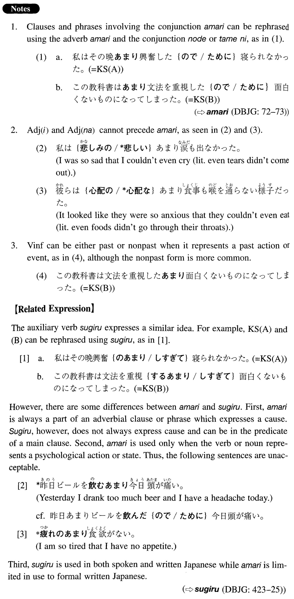

←
DoJG
→
あまり
(I. 3)
Example sentences
(ksa).
私はその晩興奮の
あまり
寝られなかった。
I was so excited that I couldn't sleep that night.
(ksb).
この教科書は文法を重視する
あまり
面白くないものになってしまった。
This textbook has turned out to be an uninteresting one because it stressed grammar too much.
(a).
秋子は恐怖の
あまり
声も出なかった。
Akiko was so frightened that she couldn't even make a sound.
(b).
私は喜びの
あまり
思わず隣の人に抱きついてしまった。
I was so happy that I hugged the person beside me without thinking.
(c).
日本の英語教育は文法が強調される
あまり
会話力の養成が疎かになっているようだ。
As for English education in Japan, it seems that because grammar is emphasized too much, the development of conversational skills is neglected.
(d).
今度の会合は形式を重んずる
あまり
内容が乏しくなってしまった。
The last meeting ended up having little content because it focused too much on formalities.
Formation
(i)
Noun
のあまり
心配
のあまり
Because of too much anxiety
(ii)
Vinformal
あまり
用心する
あまり
Someone is so cautious that
